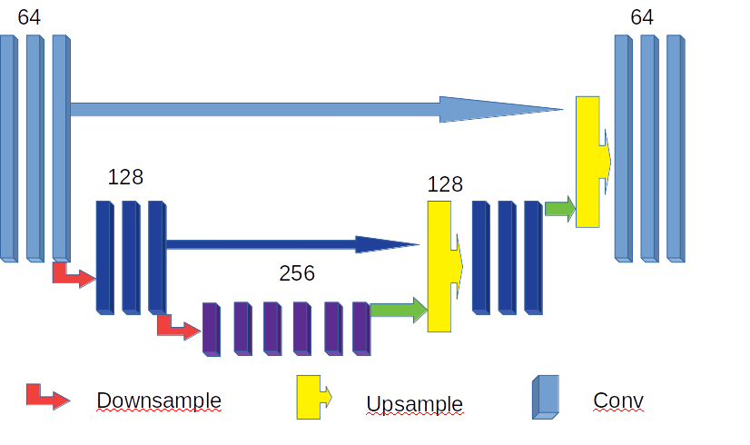

Build your network!¶
What is Unet?¶
In this part, I will try to elaborate what is UNet and how it works. Inherting the idea from the autoencoder in deep learning, UNet also encodes the corrupted image into a lower dimensional space consisting of the essential features and decodes the essential features to the uncorrupted version, while UNet further adds direct connections between the encoding and decoding sides of the networks. These direct connections propagate feature representation to the decoder at each level and provide a shortcut for backpropagation.
One example of UNet with two times- subsampling is elaborated below.
{kind=link}
How to write Unet in code?¶
The example code based on UNet in Pytorch is given below[for more details please forward to the code].
class UNet(torch.nn.Module):
def __init__(self, opts):
super(UNet, self).__init__()
self.opts = opts
input_channel_number = 5
output_channel_number = 1
kernel_size = 3
# Encoder network
self.down_block1 = UNet_down_block(input_channel_number, 64, False) # 64*520
self.down_block2 = UNet_down_block(64, 128, True) # 64*520
self.down_block3 = UNet_down_block(128, 256, True) # 64*260
# bottom convolution
self.mid_conv1 = torch.nn.Conv2d(256, 256, kernel_size, padding=(1, 1), bias=False)# 64*260
self.bn1 = Norm(256)
self.mid_conv2 = torch.nn.Conv2d(256, 256, kernel_size, padding=(1, 1), bias=False)# 64*260
self.bn2 = Norm(256)
self.mid_conv3 = torch.nn.Conv2d(256, 256, kernel_size, padding=(1, 1), bias=False) #, dilation=4 # 64*260
self.bn3 = Norm(256)
self.mid_conv4 = torch.nn.Conv2d(256, 256, kernel_size, padding=(1, 1), bias=False)# 64*260
self.bn4 = Norm(256)
self.mid_conv5 = torch.nn.Conv2d(256, 256, kernel_size, padding=(1, 1), bias=False)# 64*260
self.bn5 = Norm(256)
# Decoder network
self.up_block2 = UNet_up_block(128, 256, 128, 1)# 64*520
self.up_block3 = UNet_up_block(64, 128, 64, 1)# 64*520
# # Final output
self.last_conv1 = torch.nn.Conv2d(64, 64, 3, padding=(1, 1), bias=False)# 64*520
self.last_bn = Norm(64) #
self.last_conv2 = torch.nn.Conv2d(64, output_channel_number, 3, padding=(1, 1))# 64*520
self.last_bn2 = Norm(output_channel_number) # 64*520
self.softplus = torch.nn.Softplus(beta=5)
self.relu = torch.nn.ReLU()
self.tanhshrink = torch.nn.Tanhshrink()
self.tanh = torch.nn.Tanh()
def forward(self, x, test=False):
x1 = self.down_block1(x)
x2 = self.down_block2(x1)
x3 = self.down_block3(x2)
x4 = torch.nn.functional.leaky_relu(self.bn1(self.mid_conv1(x3)), 0.2)
x4 = torch.nn.functional.leaky_relu(self.bn2(self.mid_conv2(x4)), 0.2)
x4 = torch.nn.functional.leaky_relu(self.bn3(self.mid_conv3(x4)), 0.2)
x4 = torch.nn.functional.leaky_relu(self.bn4(self.mid_conv4(x4)), 0.2)
x4 = torch.nn.functional.leaky_relu(self.bn5(self.mid_conv5(x4)), 0.2)
out = self.up_block2(x2, x4)
out = self.up_block3(x1, out)
out = torch.nn.functional.relu(self.last_conv1(out))
out = self.last_conv2(out)
out = self.softplus(out)
return out
Knowing the network, we can input the corrupted sinogram with missing data for one or more bad blocks and then output the fixed sinogram. The contracting path in Unet can be implemented based on differet kernels, say 3*3, 4*4 or 5*5.
Note
Here we only give one example of network, UNet. In fact, there are plenties of networks worthy to explore and try, such as VGG, ResNet, FrameletNet.